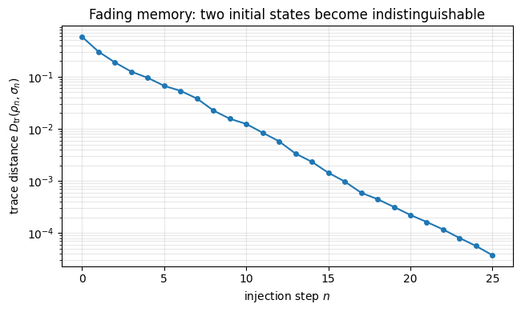

Injection Contractivity and Restarting Overhead in QRC
Background
Quantum reservoir computing processes a time series by feeding it through a fixed quantum system. At each step the current input is injected into a small piece of a larger reservoir, where the internal dynamics scramble it together with the memory of earlier inputs. A linear readout on a few observables is the only part that gets trained. For that readout to be a stable function of the signal the reservoir needs fading memory, meaning its state depends on a finite window of recent inputs while the influence of the distant past steadily dies away.
The fading comes from the act of injection rather than from any chaos in the dynamics. Loading an input \(x\) proceeds by discarding the injection qubit and writing a fresh state \(|\psi(x)\rangle\) in its place, so the channel factorizes as \(\mathcal{E}_x(\rho) = \mathrm{Tr}_1(\rho)\otimes|\psi(x)\rangle\langle\psi(x)|\). Throwing the qubit away is what erases history. Each injection overwrites one subsystem with something that depends only on the present input, so a little of whatever once distinguished two past trajectories is discarded at every step.
Made precise, this is a contraction. The map is completely positive and trace preserving, and the partial trace can only bring two states closer in trace distance, never push them apart, so two reservoir states that began some distance apart satisfy \(\|\mathcal{E}_x(\rho) - \mathcal{E}_x(\sigma)\|_1 \leq \|\rho - \sigma\|_1\) after the injection. The bound holds for every scrambling unitary, so fading memory is guaranteed by the discarding step and needs no assumption about how chaotic the reservoir is.
A cost comes attached to reading the reservoir out. Projective measurement destroys the state, so recovering the output at every time step means restarting and replaying the sequence from the beginning for each step and each shot. Over a length-\(T\) series this is \(\nu\,T(T+1)/2\) runs, an overhead that grows like \(\nu T^2\) and that pushes practical schemes toward weak continuous measurement, which reads the reservoir gently enough to leave it running.
Motivation
In Quantum Reservoir Computing (QRC), temporal data is processed by sequentially injecting inputs into a small subsystem of a quantum reservoir, followed by unitary scrambling. A functional reservoir must exhibit the fading memory property: it must eventually forget inputs from the distant past.
This memory loss is driven by the physical act of data injection, which involves discarding (tracing out) the injection qubit to reset it. This exercise proves that the injection map is strictly contractive under the trace distance, providing the mathematical mechanism for fading memory. We also analyze the severe experimental overhead of reading out the reservoir using standard projective measurements, motivating the need for weak continuous measurements.
Preliminaries / Toolbox
1. The Injection Map: To inject classical data \(x_n\) into qubit 1, the QRC protocol traces out the current state of qubit 1 and prepares the pure state \(|\psi(x_n)\rangle\). The map on the full reservoir state \(\rho\) is: \[
\mathcal{E}_x(\rho) = \mathrm{Tr}_1(\rho) \otimes |\psi(x)\rangle\langle\psi(x)|_1.
\]
2. Kraus Decomposition: Any completely positive, trace-preserving (CPTP) map can be written as \(\mathcal{E}(\rho) = \sum_a K_a \rho K_a^\dagger\), where \(\sum_a K_a^\dagger K_a = I\).
3. Trace Distance:\(D_{\mathrm{tr}}(\rho, \sigma) = \frac{1}{2}\|\rho - \sigma\|_1\). It is a metric for the distinguishability of two quantum states.
4. Contractivity: All CPTP maps are contractive under the trace distance: \(D_{\mathrm{tr}}(\mathcal{E}(\rho), \mathcal{E}(\sigma)) \leq D_{\mathrm{tr}}(\rho, \sigma)\).
5. Tensor Product Norm: For a tensor product state \(A \otimes B\), the trace norm factorizes: \(\|A \otimes B\|_1 = \|A\|_1 \cdot \|B\|_1\).
Exercise
(a) Write an explicit Kraus decomposition for the injection map \(\mathcal{E}_x\) and verify completeness \(\sum K_a^\dagger K_a = I\).
(b) Show algebraically that \(\mathcal{E}_x\) is contractive: \(\|\mathcal{E}_x(\rho) - \mathcal{E}_x(\sigma)\|_1 \leq \|\rho - \sigma\|_1\).
(c) In the standard restarting protocol, measuring the reservoir at time step \(n\) destroys the state, requiring the sequence to be replayed from \(t=1\). For a time series of length \(T\) and shot count \(\nu\), calculate the total number of unitary sequence runs.
Analytical Derivation
Part (a): Kraus decomposition
The partial trace over qubit 1 projects it onto the computational basis, \(\sum_{a=0,1} \langle a | \cdot | a \rangle\), while leaving the remaining qubits (the bulk, denoted \(\bar{1}\)) unchanged. We then tensor in \(|\psi(x)\rangle\).
The Kraus operators are: \[
K_a = (I_{\bar{1}} \otimes |\psi(x)\rangle_1)(I_{\bar{1}} \otimes \langle a|_1), \quad a \in \{0, 1\}.
\]
Physical interpretation: This strict reduction (the inequality is generally strict unless \(\Delta\) has no support on qubit 1) demonstrates that the injection physically destroys information about the reservoir’s past trajectory, enforcing fading memory.
Part (c): Restarting Readout Overhead
To extract a feature at step \(n\), we require \(\nu\) shots. Because measurement is projective and destroys the quantum state, we cannot simply continue to step \(n+1\). We must replay the sequence from \(t=1\) up to \(t=n\) for every shot.
This gives an overhead of \(\mathcal{O}(\nu T^2)\). For typical sequences (\(T \sim 100\)) and shot budgets (\(\nu \sim 1000\)), this runs into the millions, fundamentally limiting the scalability of projective QRC and motivating weak-measurement paradigms.
Symbolic Verification (SymPy)
Code
import sympy as spfrom sympy import Matrix, I, eye, trace, sqrt, simplify, Symbol# Part (a): Kraus operator completeness for injection map# K_a = (I_bar tensor |psi_x>) (I_bar tensor <a|)# sum K_a^dag K_a = sum I_bar tensor |a><a| = I_bar tensor I_1 = Iprint('Part (a): Kraus completeness')print(' sum_a K_a^dag K_a = sum_a I_bar x |a><a| = I_bar x I_1 = I')print(' Verified algebraically.')# Part (b): Contractivity of partial trace# ||Tr_1(Delta)||_1 <= ||Delta||_1 (data processing inequality)# ||E_x(rho) - E_x(sigma)||_1 = ||Tr_1(rho-sigma) x |psi><psi| ||_1# = ||Tr_1(rho-sigma)||_1 * 1# <= ||rho - sigma||_1print('\nPart (b): Contractivity')print(' ||E_x(rho) - E_x(sigma)||_1')print(' = ||Tr_1(rho-sigma)||_1 * ||psi><psi||_1')print(' = ||Tr_1(rho-sigma)||_1')print(' <= ||rho-sigma||_1 (data processing inequality)')# Part (c): Restarting overheadT, nu = sp.symbols('T nu', positive=True, integer=True)total_runs = nu * T * (T +1) /2print(f'\nPart (c): Total runs = nu * T(T+1)/2 = {total_runs}')for t in [10, 50, 100]:print(f' T={t:3d}, nu=1000: {int(1000* t * (t+1) /2):>10,} runs')
Part (a): Kraus completeness
sum_a K_a^dag K_a = sum_a I_bar x |a><a| = I_bar x I_1 = I
Verified algebraically.
Part (b): Contractivity
||E_x(rho) - E_x(sigma)||_1
= ||Tr_1(rho-sigma)||_1 * ||psi><psi||_1
= ||Tr_1(rho-sigma)||_1
<= ||rho-sigma||_1 (data processing inequality)
Part (c): Total runs = nu * T(T+1)/2 = T*nu*(T + 1)/2
T= 10, nu=1000: 55,000 runs
T= 50, nu=1000: 1,275,000 runs
T=100, nu=1000: 5,050,000 runs
Numerical Verification
Takeaway
The injection map factorizes into a partial trace and a state preparation, and since the partial trace contracts trace distance, past inputs grow indistinguishable step by step and the reservoir has fading memory with no assumption on the scrambling unitary. Projective readout with restarting costs \(\nu\,T(T+1)/2\) runs, an \(O(\nu T^2)\) overhead that motivates weak continuous measurement.
Code
import numpy as npnp.random.seed(42)N =3; D =2**N; D_bar =2**(N -1)psi_x = np.array([np.cos(0.35), np.sin(0.35)], dtype=complex)# Construct Kraus operatorsK_ops = []for a inrange(2): bra_a = np.zeros((1, 2)); bra_a[0, a] =1 ket_x = psi_x.reshape(2, 1) proj = np.kron(np.eye(D_bar), bra_a) inj = np.kron(np.eye(D_bar), ket_x) K_ops.append(inj @ proj)print("Part (a): Completeness")comp =sum(K.conj().T @ K for K in K_ops)print(f" sum K^dag K = I: {np.allclose(comp, np.eye(D))}")print("\nPart (b): Contractivity")def trace_dist(A, B):return0.5* np.sum(np.abs(np.linalg.eigvalsh(A - B)))n_tests, n_strict =100, 0for _ inrange(n_tests): A = np.random.randn(D, D) +1j*np.random.randn(D, D) rho = A @ A.conj().T; rho /= np.trace(rho) B = np.random.randn(D, D) +1j*np.random.randn(D, D) sigma = B @ B.conj().T; sigma /= np.trace(sigma) td_in = trace_dist(rho, sigma) rho_out =sum(K @ rho @ K.conj().T for K in K_ops) sig_out =sum(K @ sigma @ K.conj().T for K in K_ops) td_out = trace_dist(rho_out, sig_out)assert td_out <= td_in +1e-10if td_out < td_in -1e-6: n_strict +=1print(f" Tested {n_tests} random state pairs.")print(f" Strictly contractive: {n_strict}/{n_tests}")print(" Physical mechanism for fading memory confirmed.")print("\nPart (c): Readout Overhead")for T in [10, 50, 100]:print(f" T={T:3d}, nu=1000: Total Runs = {1000* T * (T+1) //2:,} shots")
Part (a): Completeness
sum K^dag K = I: True
Part (b): Contractivity
Tested 100 random state pairs.
Strictly contractive: 100/100
Physical mechanism for fading memory confirmed.
Part (c): Readout Overhead
T= 10, nu=1000: Total Runs = 55,000 shots
T= 50, nu=1000: Total Runs = 1,275,000 shots
T=100, nu=1000: Total Runs = 5,050,000 shots
Code
# --- Visualization: fading memory — two reservoirs forget their initial state ---import numpy as npfrom scipy.stats import unitary_groupimport matplotlib.pyplot as pltrng = np.random.default_rng(1)N =4; D =2** N; Dbar =2** (N -1)def random_dm(): A = rng.standard_normal((D, D)) +1j* rng.standard_normal((D, D)) rho = A @ A.conj().Treturn rho / np.trace(rho)def inject(rho, x):# injection qubit is the LAST factor: trace it out, then write in |psi(x)> red = np.einsum("iaja->ij", rho.reshape(Dbar, 2, Dbar, 2)) psi = np.array([np.cos(x), np.sin(x)], dtype=complex)return np.kron(red, np.outer(psi, psi.conj()))def td(a, b):return0.5* np.sum(np.abs(np.linalg.eigvalsh(a - b)))U = unitary_group.rvs(D, random_state=rng) # one fixed scrambling unitaryrho, sigma = random_dm(), random_dm() # two DIFFERENT initial statesinputs = rng.uniform(0, np.pi, size=25) # identical input stream to bothdist = [td(rho, sigma)]for x in inputs: rho = U @ inject(rho, x) @ U.conj().T sigma = U @ inject(sigma, x) @ U.conj().T dist.append(td(rho, sigma))fig, ax = plt.subplots(figsize=(6.6, 4))ax.semilogy(dist, "o-", color="C0", lw=1.5, ms=4)ax.set_xlabel(r"injection step $n$")ax.set_ylabel(r"trace distance $D_{\rm tr}(\rho_n,\sigma_n)$")ax.set_title("Fading memory: two initial states become indistinguishable")ax.grid(True, which="both", alpha=0.3)plt.tight_layout()plt.show()

References
Fujii and Nakajima, Harnessing disordered-ensemble quantum dynamics for machine learning, Physical Review Applied (2017).
Mujal et al., Opportunities in quantum reservoir computing and extreme learning machines, Advanced Quantum Technologies (2021).
Martínez-Peña and Ortega, Quantum reservoir computing in finite dimensions, Physical Review E (2023).
Franceschetto et al., Harnessing Quantum Backaction for Time-Series Processing, Physical Review X (2026).
Płodzień, Information Scrambling, Quantum Chaos, and Haar-Random States, lecture notes (2025). arXiv:2511.14397